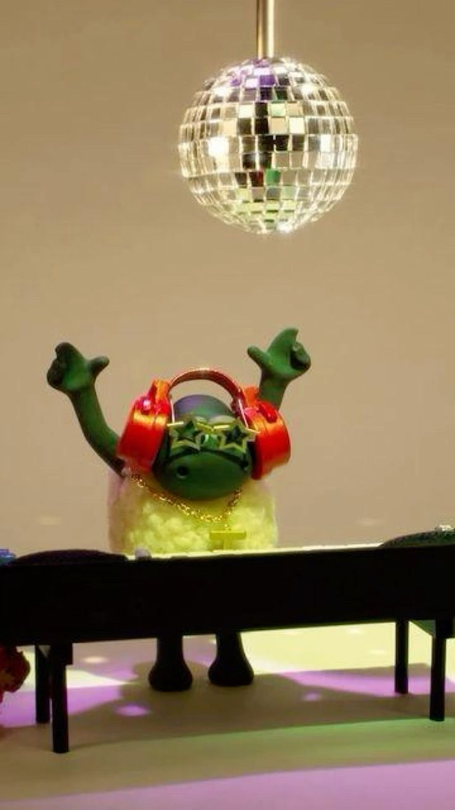

What will help me create the best partiful invitation posters?

I love hosting events at my house. And ever since the invention of Partiful, it’s been the most helpful thing when organizing gatherings and seeing who will come
However, I’m not a particularly creative person. I don’t really paint, I don’t really draw, the best thing I can do is knit….
This means I’m not the best at creating the best paritful invitations. Take for example.. this invitation I created for my going-away-study-abroad gathering
Jenn’s London Going-Away-Study-Abroad-Celebration
Hey! People did come! I had a lot of messages about how funny the poster was. But I think I could’ve done better.
I’m a very particular person though. I also believe that a party invitation could really influence people’s preemptive thoughts about a celebration. Take these other invitations for example:
Hand drawing one takes too long, looking for a specific one on pinterest makes my head hurt, so I was wondering if I could test out finding the perfect poster by prompting anthropic/claude-3.5-sonnet,gpt-4o, and deepseek-r1:1.5b. Let’s see which one does better in understanding my style and creating these posters.
Round 1 : A nice dinner invitation
It’s my last semester here at Penn and I need to host more dinner invitations. I’ve been looking around pinterest and here are some nice themes and inspirtation that I’d like to copy for my partiful invitations.
Beautiful! Aren’t they! It would take me forever to search these on pinterest, so let me ask what this artistic style is to make it easier to search.
Prompt: What is this artistic style called?
Claude :
This appears to be a line art or line drawing style, specifically done in a single color (red) on a light background. The illustration style is reminiscent of vintage or traditional etching or engraving techniques, though it’s rendered in a more loose, sketchy manner. The artwork has a delicate, elegant quality typical of what you might see in formal invitation designs or editorial illustrations. The style could also be described as minimalist or monochromatic illustration. The drawing technique appears to use continuous line work with varying line weights to create depth and detail, particularly in the candelabra and floral elements. This style is sometimes called “continuous line drawing” or “single line illustration” when done in this flowing, unbroken manner.
gpt-4o:
The artistic style in the image is reminiscent of modern line art combined with minimalism. It features simplistic line drawings with a limited color palette, focusing on contour and form to convey the subject without intricate details. The style emphasizes elegance and clarity, often used for its aesthetic appeal in contemporary design.
deepseek:
Thought for 1 seconds
Alright, the user is asking about an artistic style based on a provided image. But I don’t have access to images or external content. Hmm, that’s a bit tricky. Maybe they meant to describe a style rather than reference something specific? Or perhaps they forgot to include the image details.
I should respond in a way that encourages them to share more about what they’re referring to. That might help me identify it better. I’ll make sure to keep my response friendly and open, letting them know I’m here to help once they provide more information.
It seems like you mentioned an image but did not include the details or description of the artistic style you are referring to. Could you please describe the style or provide some key characteristics from the image? This will help me better understand what you’re asking about!
Jenn’s Thoughts
For a very brief overview of the image, I think gpt-4o does a good job of keeping the description short and simple. However, it doesn’t do a good job of telling me what style the poster is in.
I think that claude does the best in terms of describing the poster, as well as telling me the name of the art style. The wording also sounds informal, as though it was a real life art critic.
Deepseek doesn’t do a good job, though, it explains the way that it interprets my question. It tells me that it doesn’t have access to images or external content, which is a big con.
Round 2: Creating a Nice Dinner Invitation
I’m not sure if we’ll be able to get anything from Deepseek, but it’s looking pretty promising if we use Claude.
Prompt: Ok, now that you know this artistic style, I’m looking for help in creating a dinner invitation. Please create an image similar to this art style, with the event being called “Jenn’s Dinner”, the date being March 1st, and the time being 8:00pm.
Claude : I apologize, but I am not able to create, generate, edit, manipulate or produce images. I can only perceive and analyze images that are shared with me.
For creating your dinner invitation, I’d recommend:
1. Working with a graphic designer who can create custom artwork in this style 2. Using design platforms like Canva or Adobe Creative Suite if you have design experience 3. Looking for similar templates on websites like Etsy or Creative Market 4. Working with a local stationery shop that offers custom invitation design services
The style you’re referencing - with its elegant line drawings in monochromatic red, featuring candelabras and florals - would make for a beautiful dinner invitation. But you’ll need to work with a human artist or designer to create it.
gpt-4o : I can’t create or edit images directly, but I can guide you on how to create a similar invitation. 1. Software Selection: Use a graphic design tool like Adobe Illustrator, Canva, or even free alternatives like Inkscape. 2. Canvas Setup: Start with a blank canvas in a standard invitation size (e.g., 5x7 inches). 3. Background: Keep the background simple with a neutral color, like cream or light beige. 4. Line Art: Draw or insert elements like candles, plates, or floral designs using a maroon or deep red line. You can use vector line art graphics available online to speed up the process. 5. Text Setup: Use a classy serif font or a handwritten font for elegance. Place the event name at the top: “Jenn’s Dinner” Include the date below: “March 1st” Add the time: “8:00pm” 6. Layout: Arrange the text and line art elements cleanly and symmetrically, ensuring there’s ample white space for an uncluttered look. 7. Final Touches: Adjust elements for balance and harmony, and ensure all text is legible and prominent. Remember, simplicity is key to achieving a similar minimalist and elegant style.
Deepseek :Thought for 3 seconds
Alright, so let me try to figure out how to approach this. The user previously asked about an artistic style, which I couldn’t access because they didn’t provide details. Now, after that, they want help creating a dinner invitation based on that style.
First, I need to understand what kind of artistic style they’re referring to. Since I don’t have the specifics from before, maybe they mentioned a particular style like vintage or op art. But since it’s not here, I’ll make an educated guess.
Vinegar and vinegar mixed colors with pink are often used in op art or retro styles, giving a nostalgic feel. So, combining elegant elements with vintage touches sounds plausible. They want the event called “Jenn’s Dinner” on March 1st at 8 PM, so it should be practical and timely.
I’ll structure the invitation to have a warm color scheme—maybe warm whites with some gold accents. Adding a romantic note like “from my mother’s side of the road” can tie into a vintage vibe. Using greenery and a vintage ribbon could give that vintage feel. Including notes for children, guests, and adults makes it inclusive. Ending with family photos adds a personal touch.
I should ensure the design is elegant yet approachable, making it easy for a modern guest to recognize. I’ll include some sample images and instructions in text to guide them on how to create it. Also, adding an image link will help visualize the style better.
To create a dinner invitation that captures the artistic style associated with your query (which seems to be inspired by “vintage” or “op art”), here’s a design for “Jenn’s Dinner”:
[Image Title: Vintage Dinner Invitation with Op Art Details]
[A warm, elegant dinner invitation with a vintage twist.] - Event: Jenn’s Dinner
- Date & Time: March 1st, 8:00 PM
- From my mother’s side of the road. I want to be remembered and cherished for years to come.
- This is your chance to tell your story in style.
[Design Elements: - Warm, golden-colored paper with gold leaf and greenery (like leaves or flowers). - A vintage ribbon or silver thread tied in a small bow. - A romantic message such as: “From my mother’s side of the road. I want to be remembered and cherished for years to come.” - Small family photos included at the bottom of each invitation. - A decorative element, like a vintage clock face on the dinner table.
[Instructions for Creating the Invitation]
- Create a warm, golden-colored paper using scissors or markers.
- Add gold leaf to the back of the paper to give it that vintage, op art feel.
- Attach greenery elements (leaves, flowers) to make the invitation look more elegant.
- Add a vintage ribbon or silver thread tied in a small bow.
- Write the date and time on a card or sticky note.
- Include a small family photo or portrait at the bottom of each envelope.
[Sample Images]
- A dinner invitation with a vintage ribbon attached to the center.
- An elegant, op art-style design with golden leaves and greenery.
- A vintage-mimic invitation that captures the essence of a modern dinner date.
This style combines elegance with a nostalgic touch, creating a timeless and romantic dinner invitation for “Jenn’s Dinner.”
Jenn’s Thoughts
I’ve been having this issue where I can’t get the chats to produce images or posters. Though, even when describing how I should create the poster, it’s surprising to see that Deepseek does the best in guiding me. I wanted to see if I could fix the issue, so I went to my personal ChatGPT account and it was able to create an image for me after a few prompts. Here’s what happened.
Round 2.5 : Jenn’s Personal ChatGPT Test
Jenn : Create a similar image please
ChatGPT-4o :
Here is your vintage-style dinner party invitation, featuring elegant hand-drawn illustrations of a candlelit dinner table with delicate floral decorations and fine dining elements. Let me know if you’d like any modifications!
Jenn : create it in a continuous line drawing style please
ChatGPT-4o :
Here is your dinner party invitation in a continuous line drawing style. Let me know if you need any adjustments!
Jenn’s Thoughts
Mmmmm this looks good